La casa
Casa Del Solar es una casa pensada para descansar en familia, con mucho espacio verde alrededor, pileta y una cochera cubierta. Es un lugar tranquilo, donde la convivencia con el vecindario y el respeto por la naturaleza son parte de la experiencia.
Comodidades
- Pileta de 3 x 8 metros
- Aire acondicionado
- Wifi
- Cochera cubierta para dos vehículos
- Cocina equipada con heladera, microondas y pava eléctrica
- Amplio parque con arboleda
El entorno
La casa está en Solar de los Molinos, rodeada de árboles y con vista a las sierras. La bajada al lago queda a 500 metros, cerca del Náutico de la bajada, ideal para caminar, pasear en kayak o mirar el atardecer sobre el agua.
Es un lugar de tranquilidad para disfrutar en familia, con ritmo de campo.
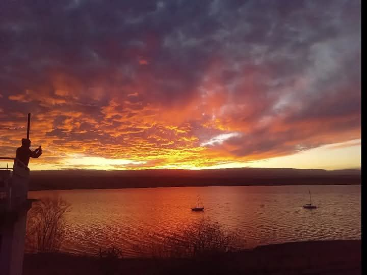
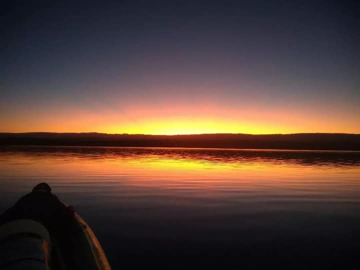
Fotos
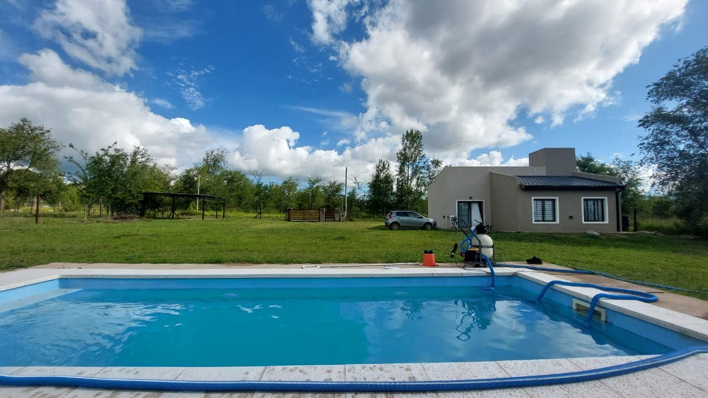
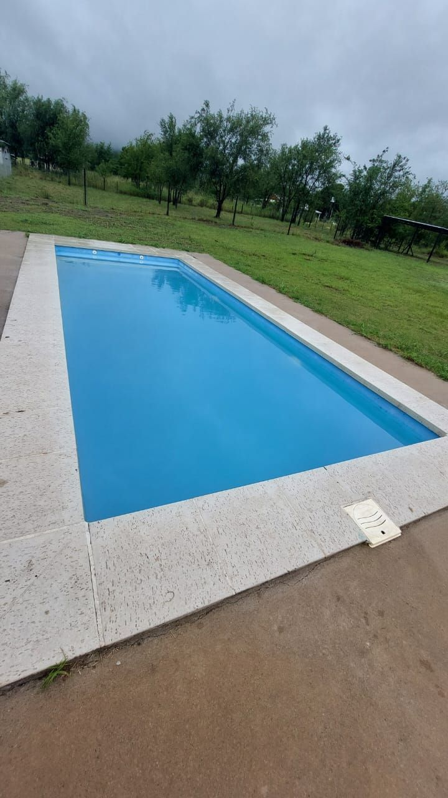
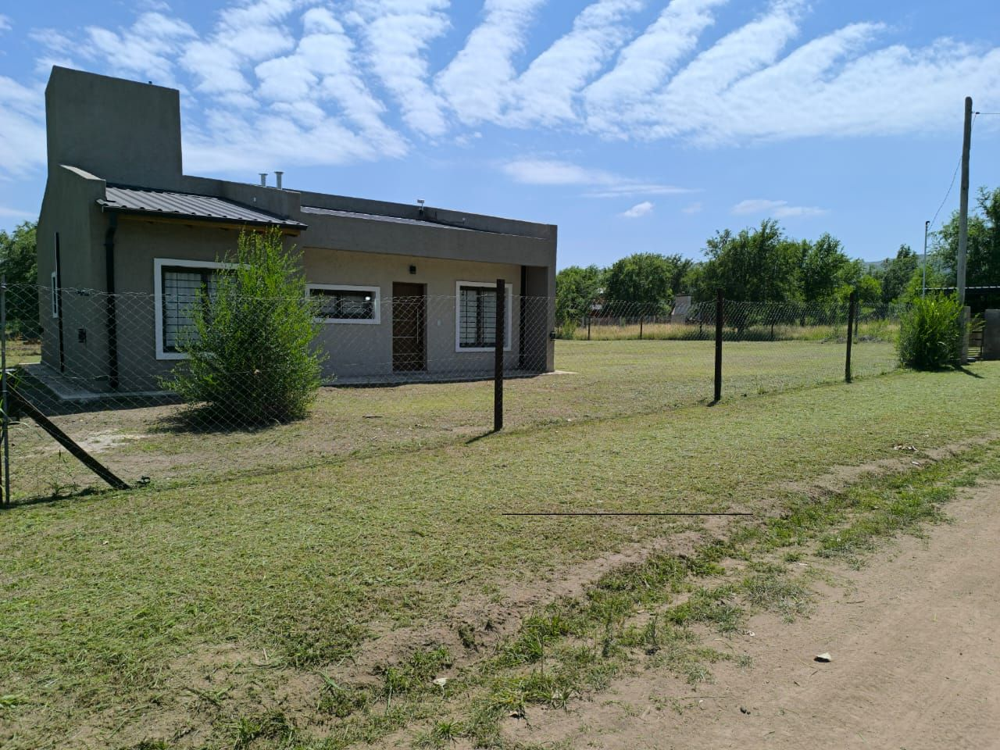
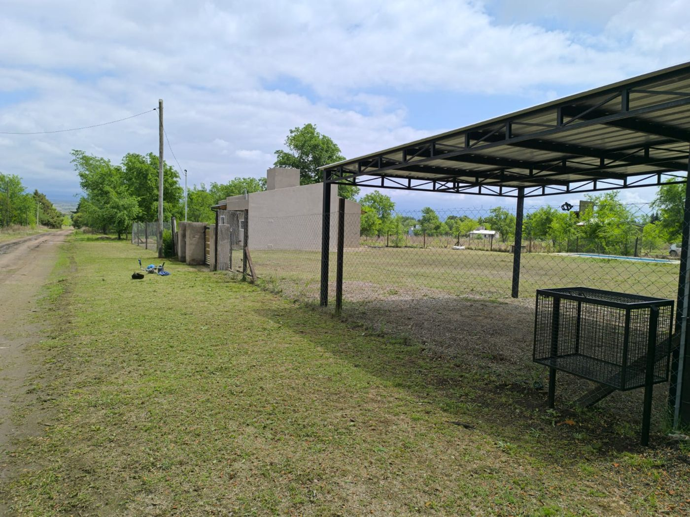
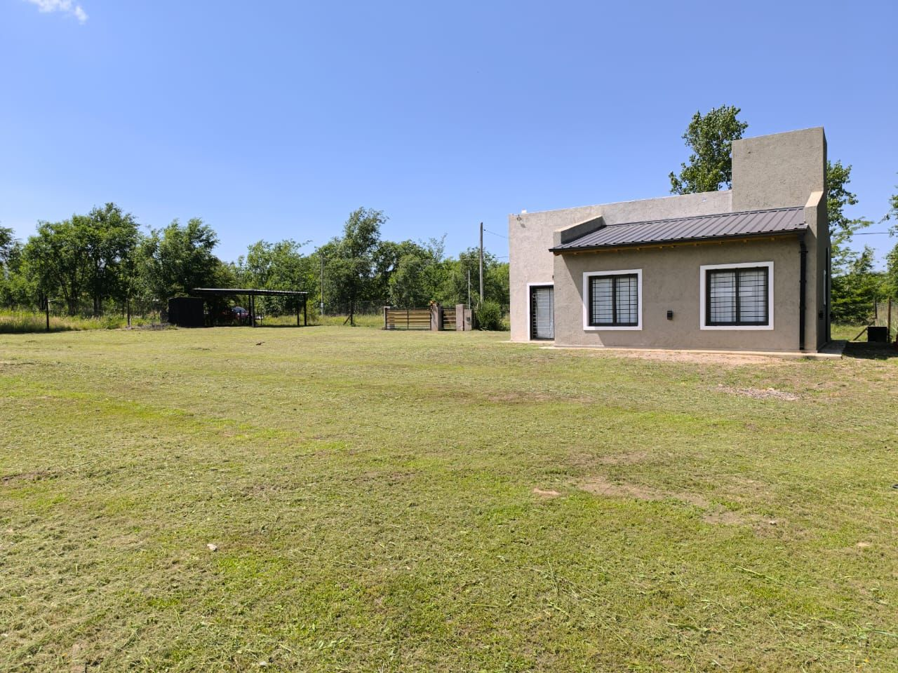
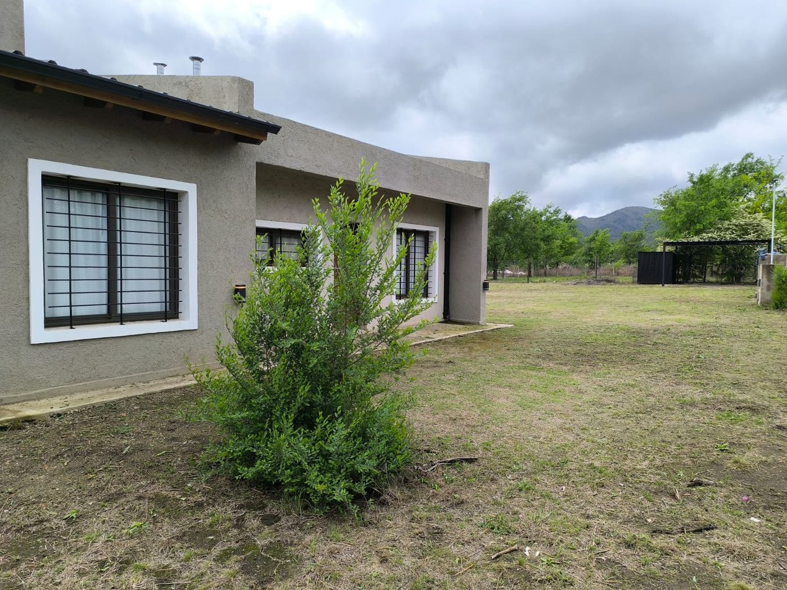
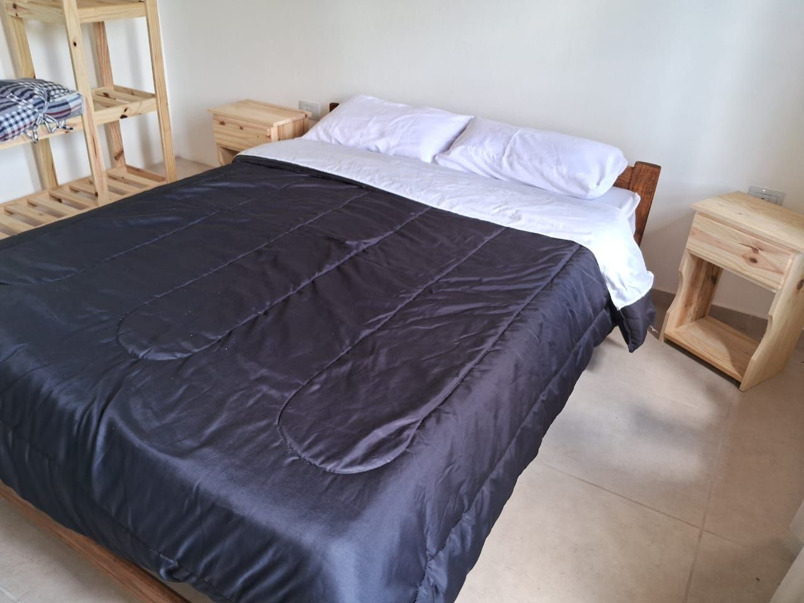
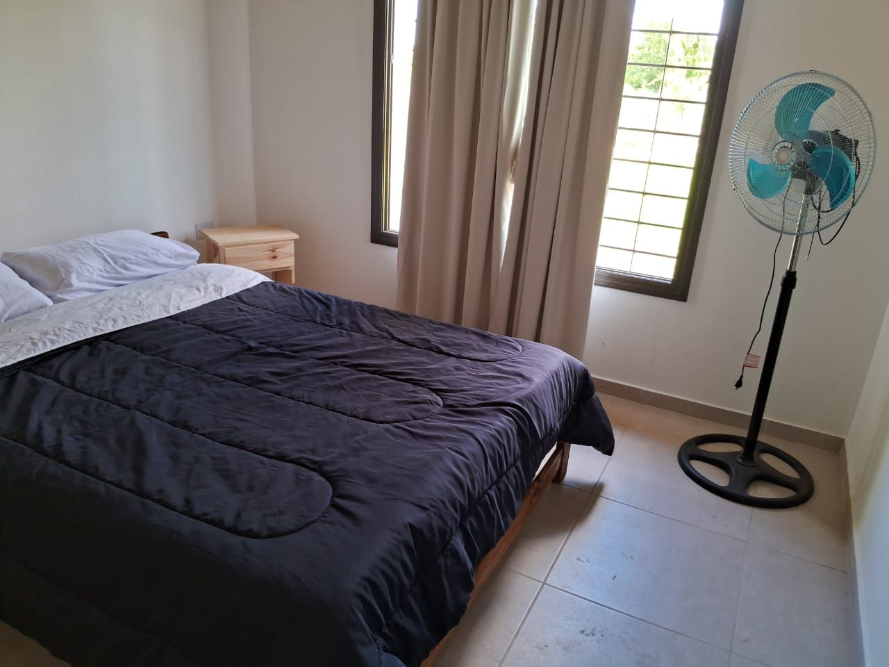
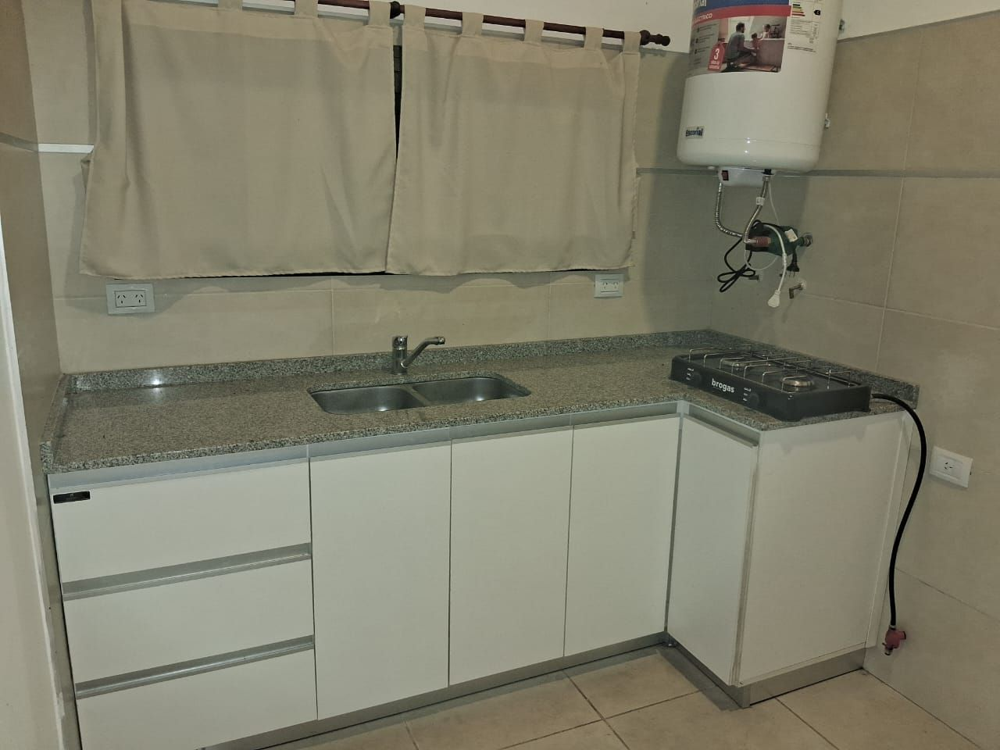
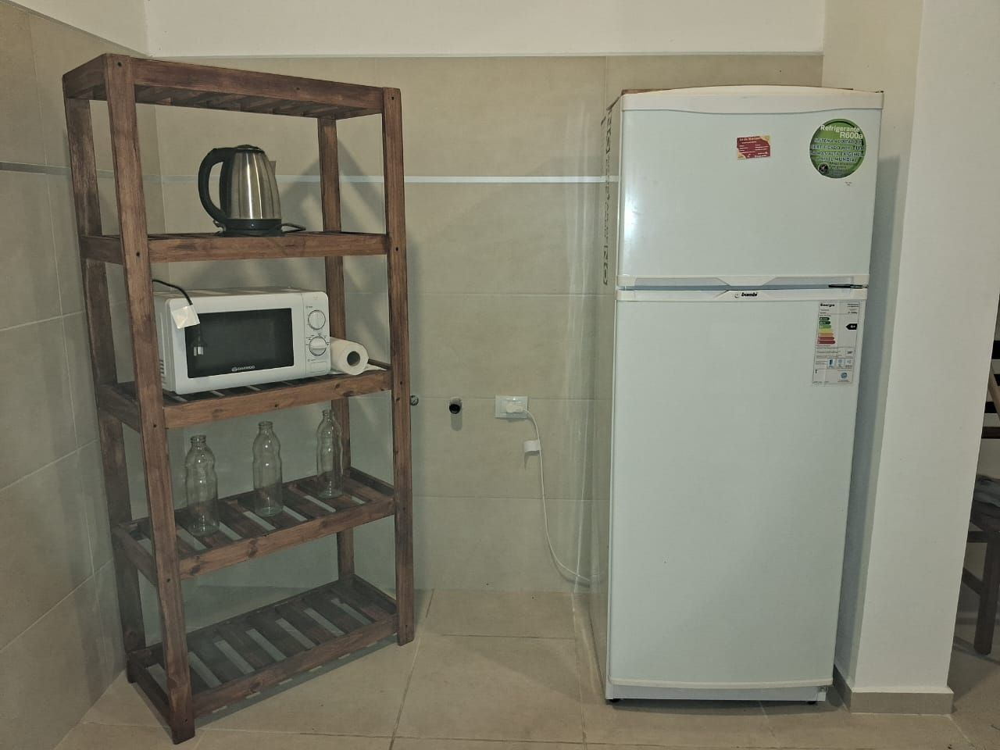
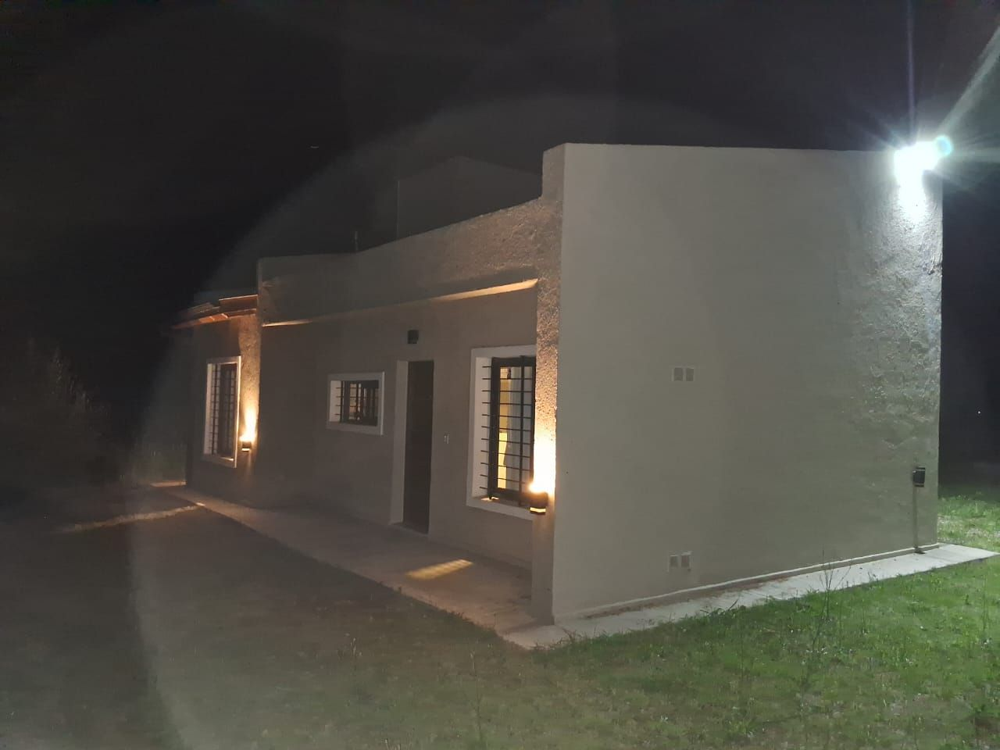
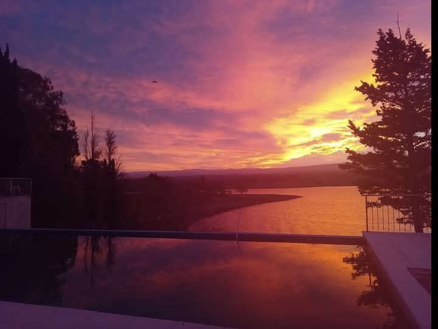
Tarifas y reservas
Las tarifas dependen de la temporada y de la cantidad de noches. Escribinos por WhatsApp con las fechas que te interesan y te respondemos la disponibilidad y el valor.
Cuidemos el lugar
Pedimos respeto por la tranquilidad del vecindario y por la naturaleza que nos rodea: horarios de descanso, cuidado del monte y de los residuos.